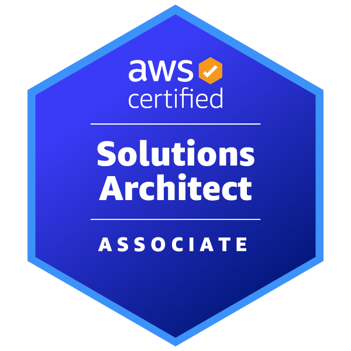
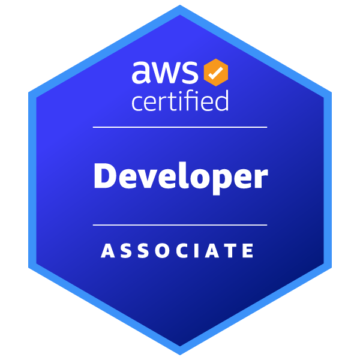
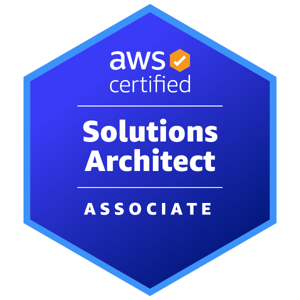
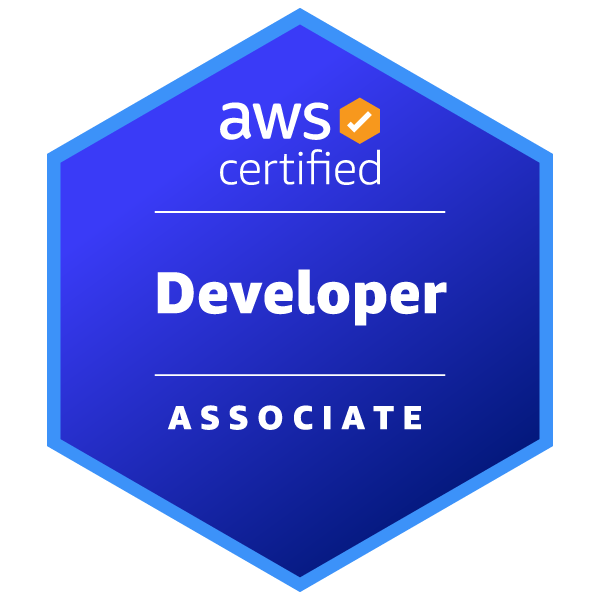
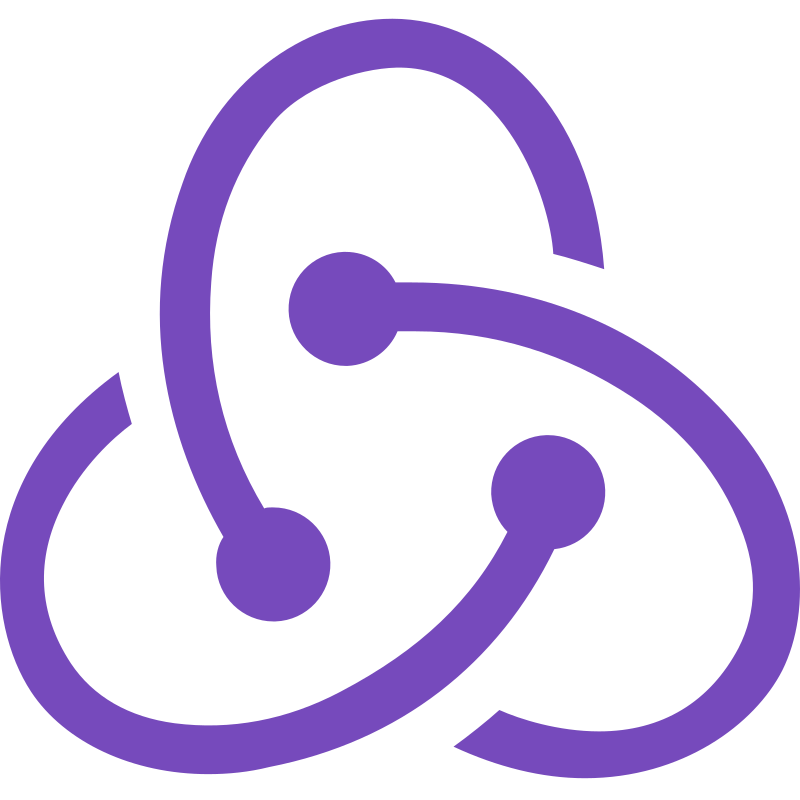
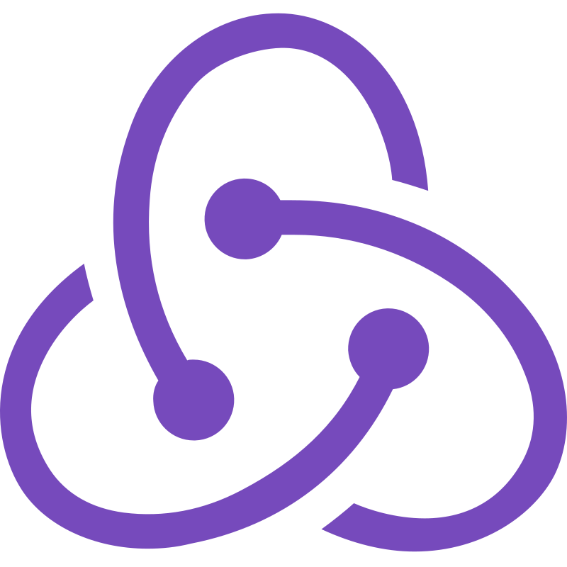

Simon Parker
~/scientist/pharmacist/engineer
I’ve made the leap from healthcare to cloud. Backed by a decade of professional experience, I bring reliability, clear communication, and an intense drive to learn and build. From AWS and Python to infrastructure and support, I’m hands-on, self-motivated, and focused on solving meaningful problems with modern tech.
Customer Success
Strongroom.AI
Website Powered by AWS
Ambition & Career Pathway
I'm transitioning into cloud and DevOps by building a foundation of certifications that actually matter — not just to tick boxes, but to deeply understand the tools and systems I’ll be expected to own. I want to be the person people turn to when things get tough, so I’m going deep where it counts. I'm applying what I learn through real projects, including a full stack solution for a paying client using AWS. Right now I’m focused on Terraform to strengthen my Infrastructure as Code skills. I dipped into Harvard’s CS50 a while back to explore CS fundamentals — before ‘dropping out’ to focus on React and project-based learning. It sparked my interest, but I’ve found that building useful things is where I learn best. I also use AI tools daily to explore concepts faster and test my thinking. I'm hands-on, moving fast, and just getting started.
Current Skills & Technologies
- SQL Server & Querying – basic admin tasks and writing SQL queries
- Linux CLI & System Navigation – working with file structures, permissions, and services
- Cloud Security Concepts – KMS, TLS, SSE, IAM roles
- Working with APIs – consuming REST APIs, using HTTP methods and status codes
- Containers & Serverless – Docker, Fargate, Lambda, API Gateway, DynamoDB
- Infrastructure as Code (AWS CDK, Terraform, CloudFormation)
- Cloud Networking Fundamentals – VPCs, subnets, DNS, port config
- Command-Line Fluency – daily use of Linux CLI, Git, AWS CLI, Docker, Terraform
Certifications
 





 
